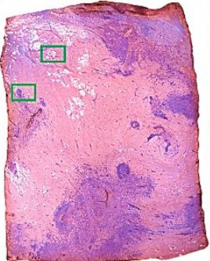
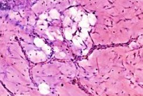
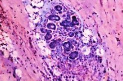
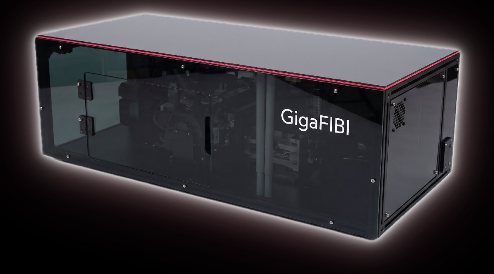

Pathology at the
speed of light.™
A new perspective on tissue.
Closer to the point of care.
We're advancing direct-to-digital tissue imaging to bring microscopic information closer to the decisions that matter.
Digital pathology.
Directly from tissue.
FIBI creates microscopic images directly from the specimen, bringing digital image acquisition earlier in the pathology workflow.
Fluorescence-imitating brightfield imaging reveals tissue architecture and cellular detail in full color. Our focus is on making this approach practical for fresh-tissue assessment, with images that pathologists can examine and interpret.
Digital from acquisition, FIBI creates opportunities for computational analysis and AI development alongside pathologist expertise.
AI applications require their own development and validation.
How FIBI forms an image.
Controlled illumination and the tissue's own fluorescence reveal microscopic detail at the stained surface.



Cellular detail.
Different specimens.
A common perspective.
Two configurations built around distinct clinical needs. One core approach to direct tissue imaging.
Broad tissue-surface imaging, with an initial focus on breast lumpectomy margin assessment.

A compact configuration focused on earlier microscopic assessment of core biopsy material.
Meaningful information.
Does this tissue meet the need?
Information with
an opportunity to act.
Development begins with a clinical question. We're working toward imaging that fits the people, specimens, and decisions around it.
{{ panel.q1 }}
{{ panel.q2 }}
{{ panel.p1 }}
{{ panel.p2 }}
A closer look
at the evidence.
Peer-reviewed research provides a foundation for continued development of FIBI.
Read the pilot study ↗across 400 FIBI reads
These findings concern the study's imaging method and specimens. They do not establish the performance of final instrument configurations, fresh-tissue margin assessment, or AI diagnostic applications.
Study reference and image details +
Built around
clinical understanding.
Bringing pathology and imaging expertise together with experience in diagnostics development and commercialization.
Bring your clinical
perspective.
We welcome conversations with pathologists, clinical investigators, and research collaborators.